REVUE MÉTHODE
http://revuemethode.org
Merci pour votre message !
par Olivier MENUT
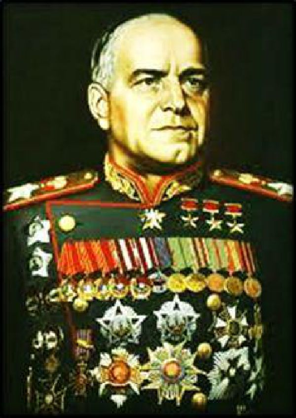
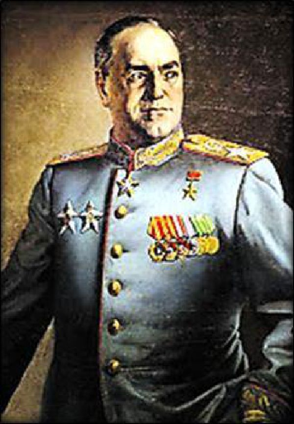
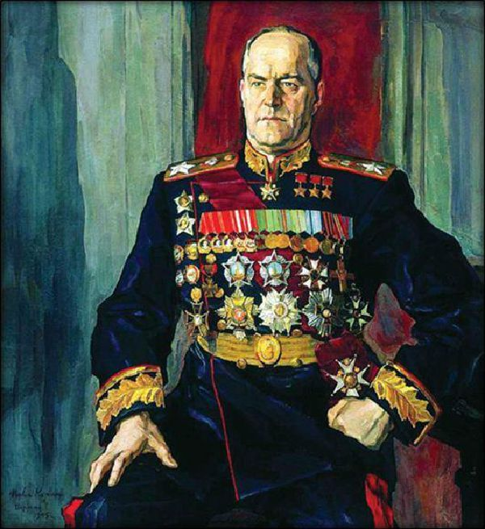
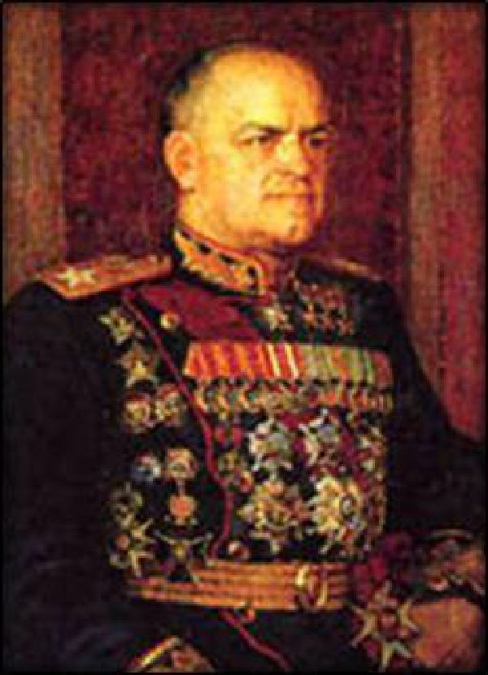
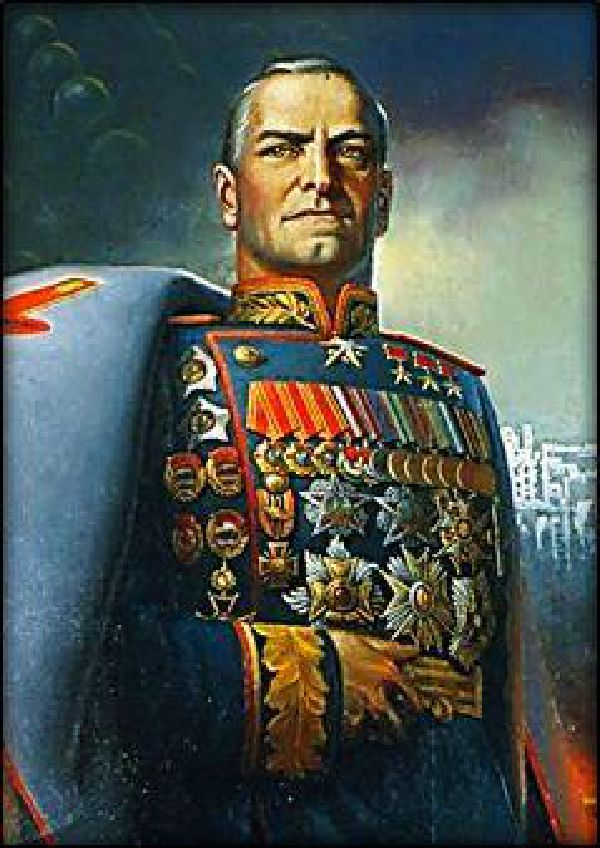
Nous présentons maintenant une étude exhaustique des décorations reçues par le maréchal Gueorgui Konstantinovitch Joukov tout au long de sa carrière militaire et politique. Au total, celui-ci aura reçu 73 décorations, dont 43 Soviétiques et 30 étrangères (France, Grande-Bretagne, Etats-Unis d’Amérique, Pologne, Mongolie, Bulgarie, Italie, Yougoslavie et Tchécoslovaquie, etc…).
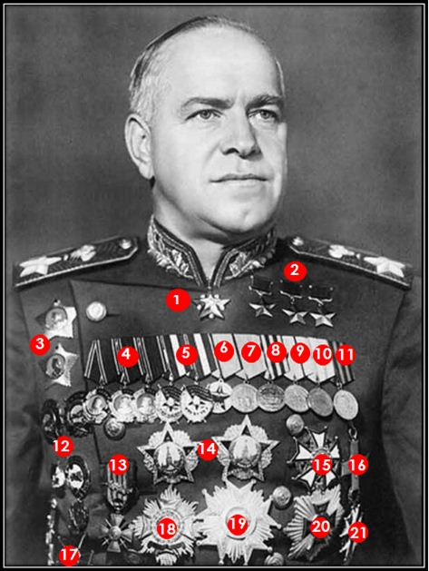
Les tableaux ci-dessous récapitulent toutes les décorations de Joukov selon le principe suivant :
Tout d’abord le numéro de la décoration, que l’on retrouve sur la photo précédente, puis l’appellation de la décoration (traduite en français, car elle peut avoir un nom sensiblement différente en russe), la date de création de la décoration, la photo de la décoration et de son ruban et enfin les dates de réception de ces distinctions par Joukov.
L’initiale « NP » signifie que cette médaille n’apparait pas sur le portrait photographique ci-dessus, soit parce qu’il ne portait plus ces décorations (Ordre de Saint-Georges notamment) ou soit par ce qu’il ne les avait pas encore reçues (notamment lors de sa réhabilitation politique en 1956).
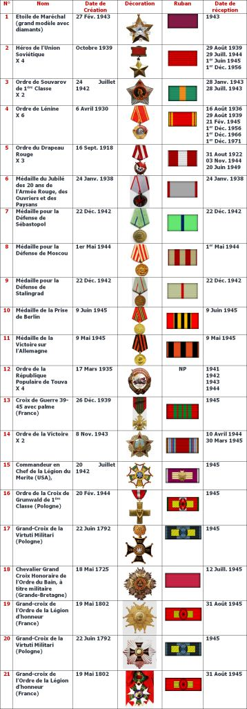
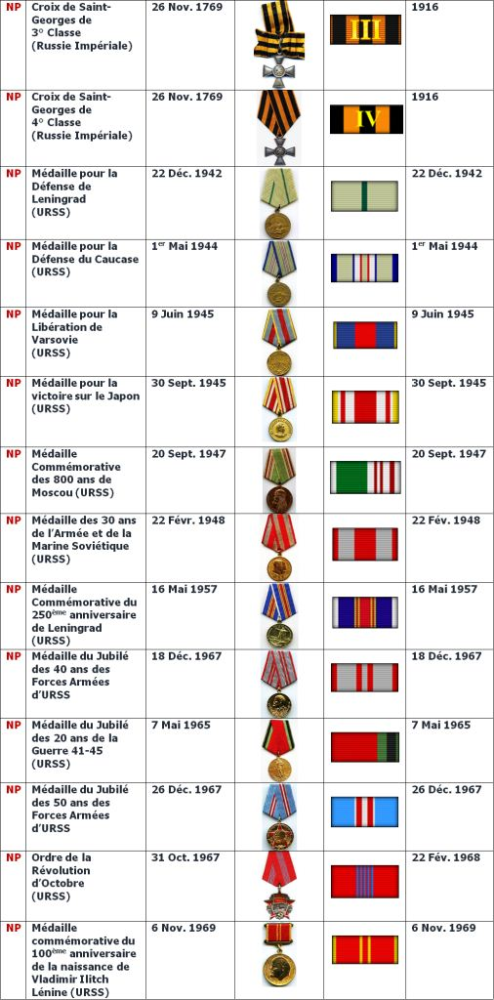
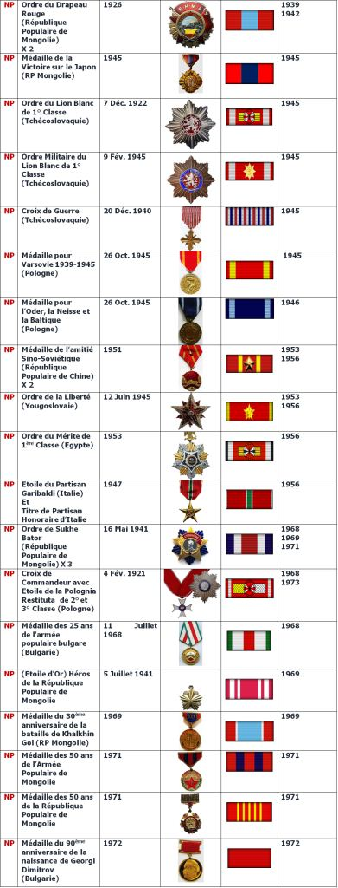
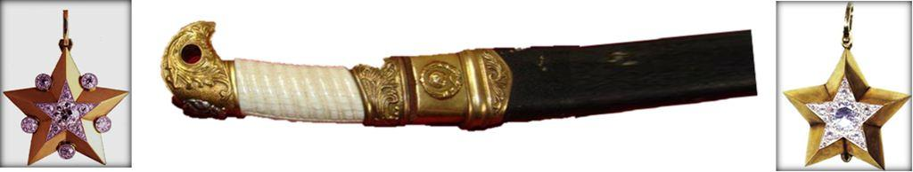
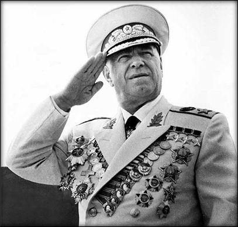
Encore aujourd’hui le régime Russe rend régulièrement hommage à cette grande figure militaire et notamment en créant l’ordre de Joukov en 1994.
Mais cela fera l’objet d’un prochain article !
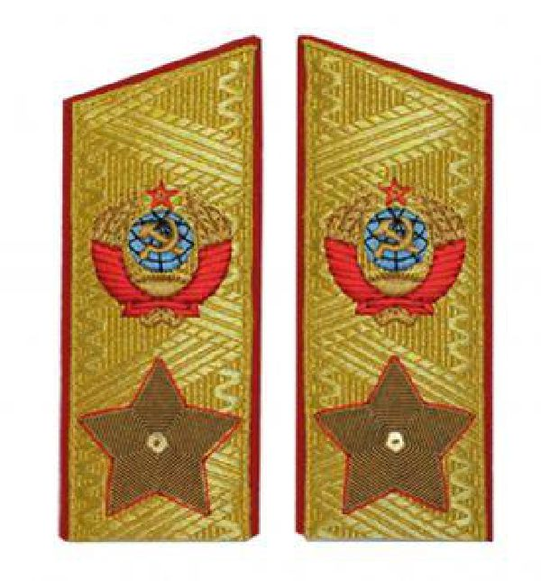
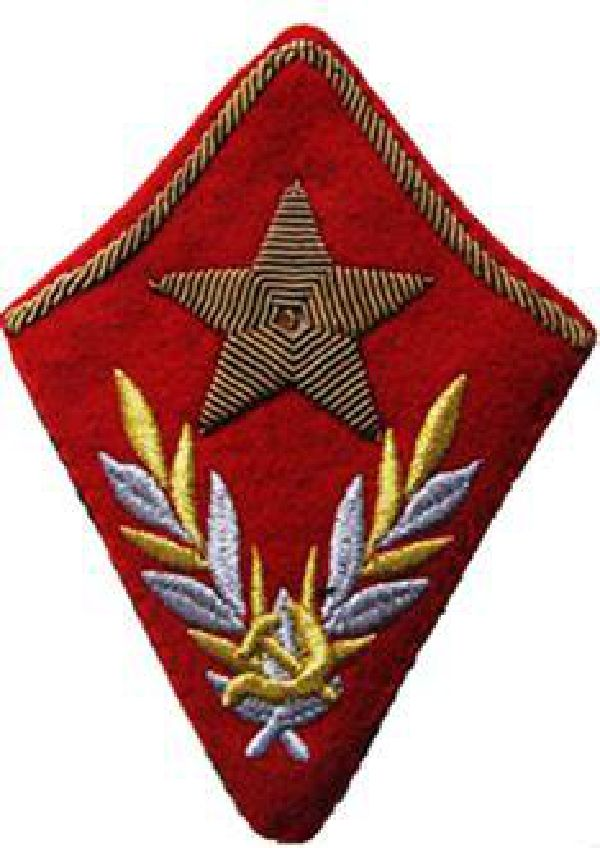
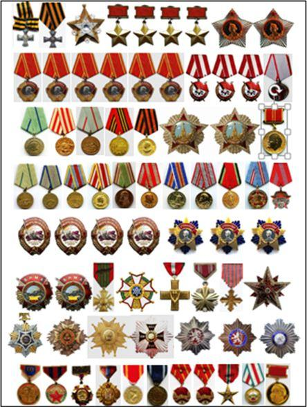
REVUE MÉTHODE
http://revuemethode.org
Partager cette page